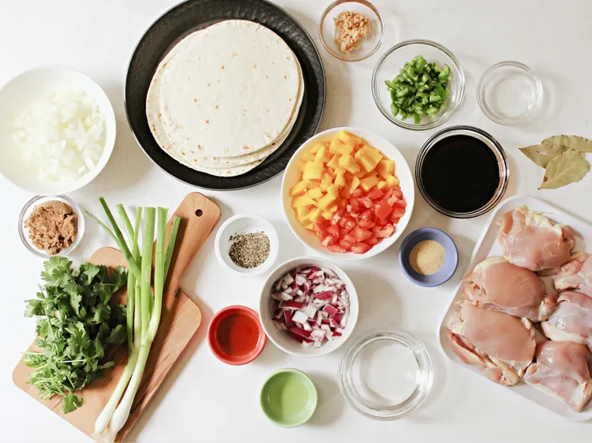
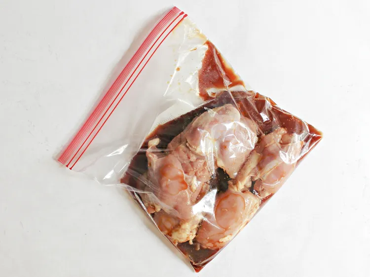
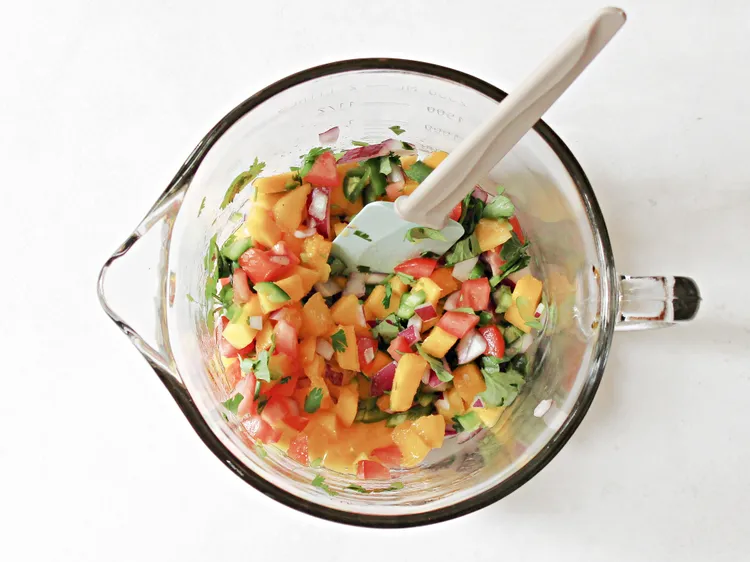
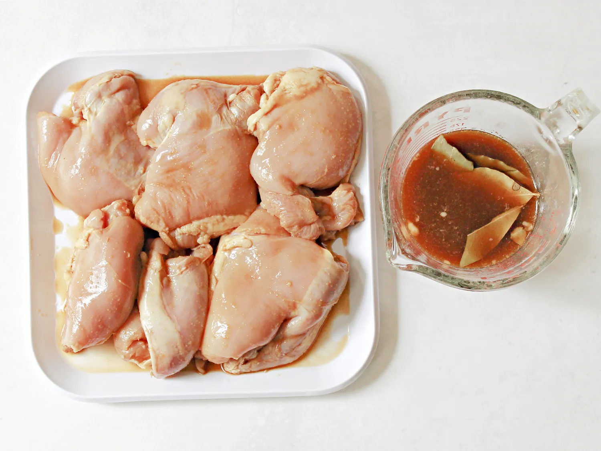
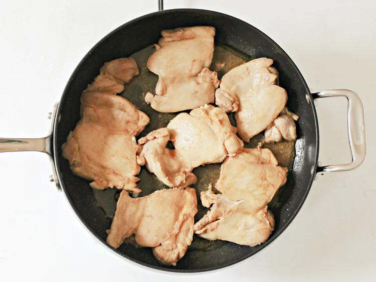
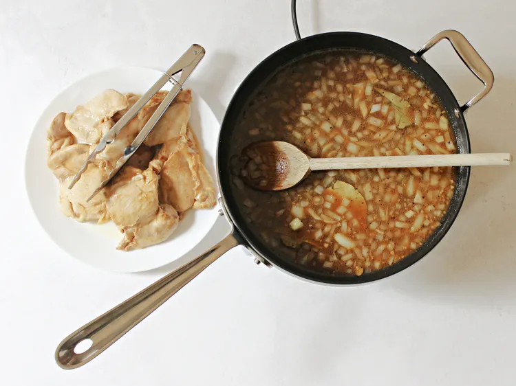
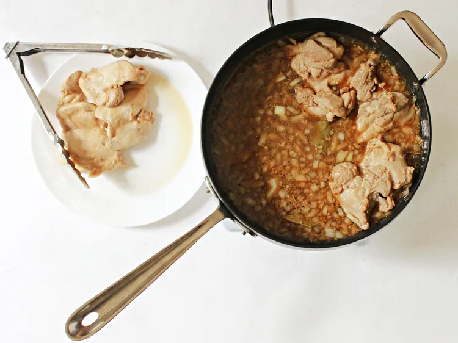
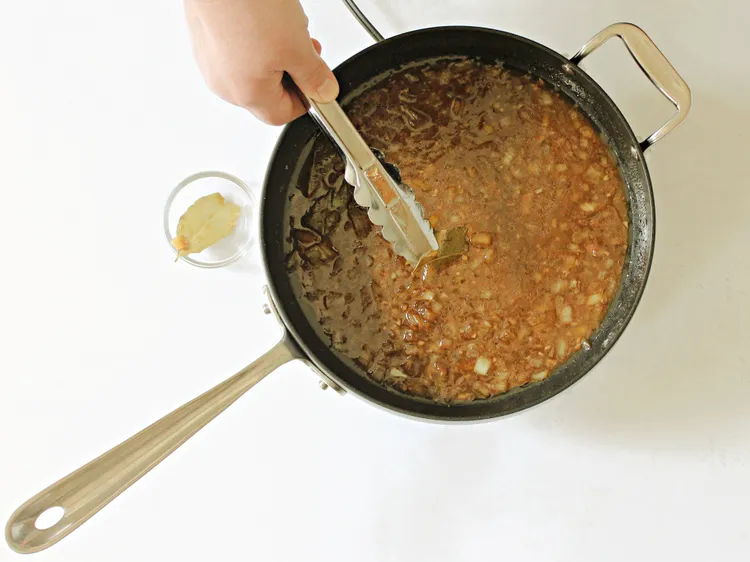
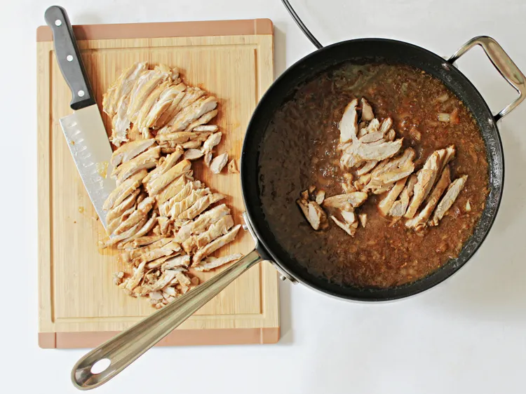
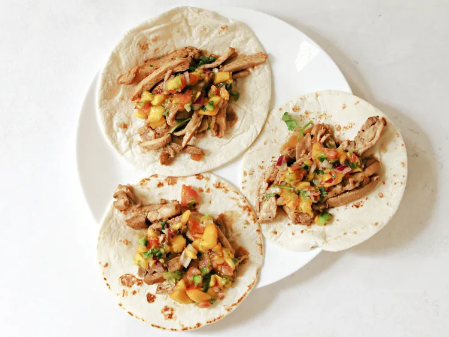

Chicken Adobo Tacos

Description
These chicken adobo tacos deliciously fuse Mexican and Filipino cuisine. Wrap up some chicken adobo in a flour tortilla and top with mango salsa—so good! Make the mango salsa as directed, or save time by using store-bought salsa.
Ingredients
Adobo Chicken Tacos
- 1/3 cup soy sauce
- 1/3 cup white vinegar
- 3 bay leaves
- 1 teaspoon granulated garlic
- 1 1/2 pounds skinless, boneless chicken thighs
- 2 tablespoons oil, divided
- 1/2 cup diced onion
- 3 garlic cloves, minced
- 1 1/2 cups water
- 2 tablespoons brown sugar
- teaspoon freshly ground black pepper, or to taste
- 8 (8-inch) flour tortillas
- chopped cilantro and sliced green onions, for garnish (optional)
Mango Salsa
- 2 tablespoons white vinegar
- 1 tablespoon fish sauce
- 1/2 teaspoon avocado oil
- 2 teaspoons white sugar
- 1 pinch ground white pepper, or to taste
- 1 mango - peeled, pitted, and diced
- 1 Roma tomato, seeded and diced
- 1/4 cup minced red onion
- 1/4 cup minced jalapeno pepper, seeds and membranes removed
- 1/2 cup chopped fresh cilantro
Directions
- Gather the ingredients.

- Combine soy sauce, vinegar, bay leaves, and garlic in a large plastic bag with a zipper. Gently squeeze to mix well. Add chicken and coat with marinade. Squeeze out as much air from the bag as possible, coat all the chicken pieces with marinade, seal, and refrigerate for at least 20 minutes.

- Meanwhile, combine vinegar, fish sauce, avocado oil, sugar, and black pepper in a bowl for the salsa. Stir with a whisk or fork until sugar is dissolved. Add mango, tomato, red onion, jalapeño, and chopped cilantro to the bowl. Toss to combine, and refrigerate salsa until ready to serve.

- For tacos, remove chicken pieces from the marinade and reserve the marinade.

- Heat oil in a large nonstick skillet over medium-high heat. Carefully add the chicken thighs, and brown on each side, 1 to 2 minutes, then remove chicken to a plate.

- To the same skillet, add onion, and cook for about 1 minute. Stir in minced garlic and cook until fragrant, about 30 seconds. Add reserved marinade, water, brown sugar, and black pepper, and bring to a boil.

- Return chicken to the skillet, smooth side down. Reduce heat to low, and simmer chicken uncovered, about 15 minutes. The liquid should bubble gently. Turn chicken and simmer 10 minutes more. Remove chicken from skillet to rest.

- Cook sauce over medium heat until syrupy, thick, and reduced, about 10 minutes. Remove skillet from heat. Remove bay leaves and discard.

- Slice chicken into 1/2-inch slices and return to the skillet to coat in the sauce. Garnish with fresh cilantro and chopped green onions, if desired.

- Fill each tortilla with chicken strips and top with mango salsa. Serve immediately.
